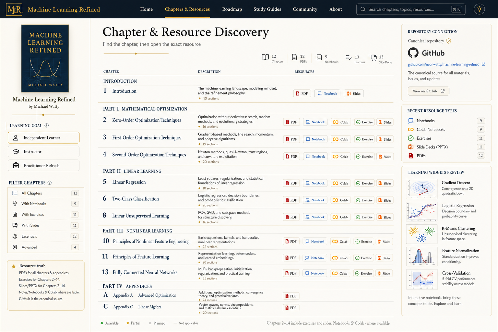

Machine Learning Refined
Chapter & Resource Discovery
Chapter table, resource badges, canonical GitHub source panel, and widget preview

Machine Learning Refined
Chapter table, resource badges, canonical GitHub source panel, and widget preview
